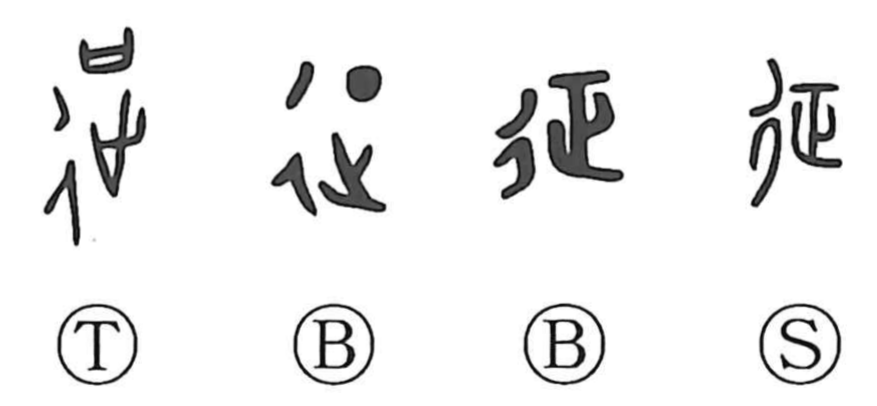

征

Kun: utsu, yuku, toru | On: sei
to campaign ・ to conquer ・ to attack ・ to levy taxes ・ to go
Explanation
Shirakawa explains 征 as a phonetic–semantic compound. The right element 正 provides the on reading sei and, in the older graph 政 that once stood in its place, conveyed the act of striking and subduing a fortified city. With the addition of the step radical 彳, the character explicitly depicts a march toward that city, giving the senses to beat and to attack. Because subjugated peoples were then assessed, the character also came to mean to take taxes and taxation. By extension it further means to go far or to undertake distant campaigns, as seen in ensei (遠征).